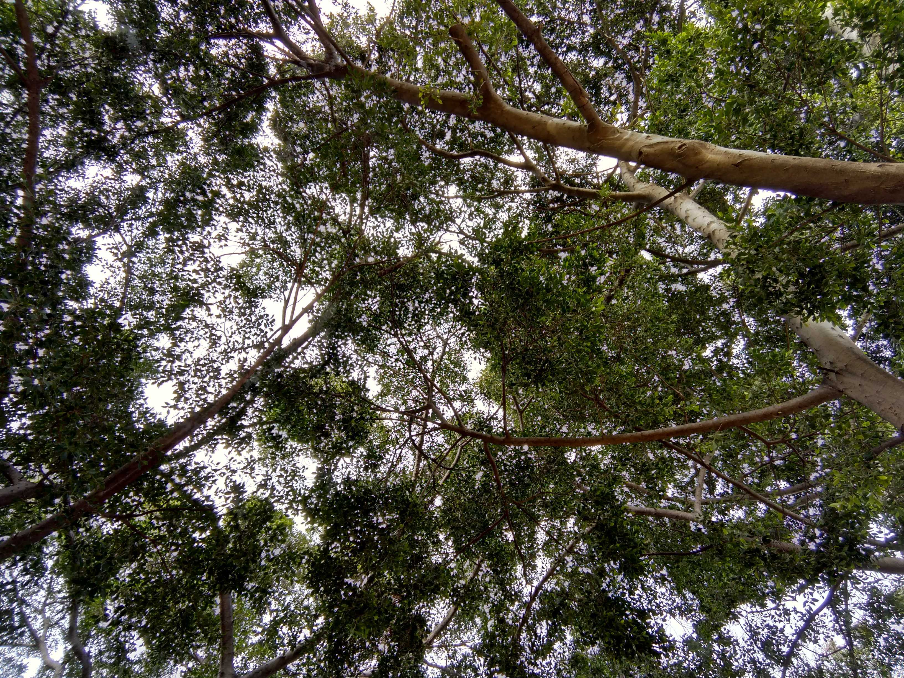
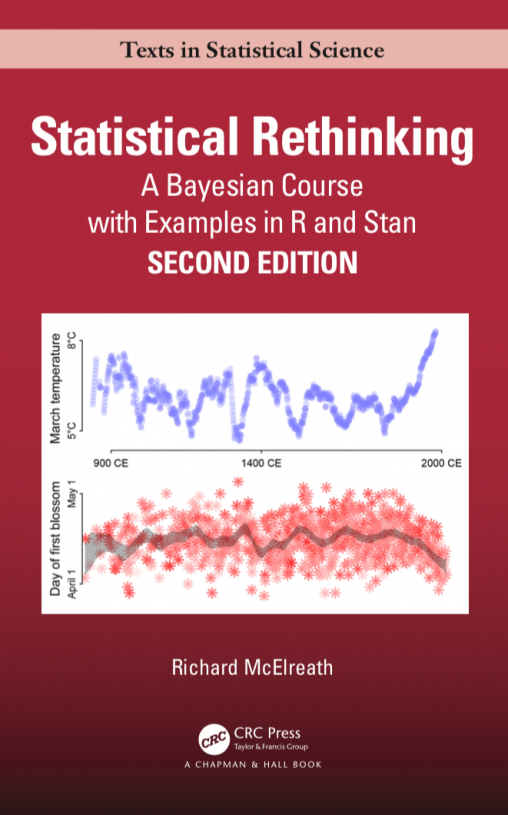
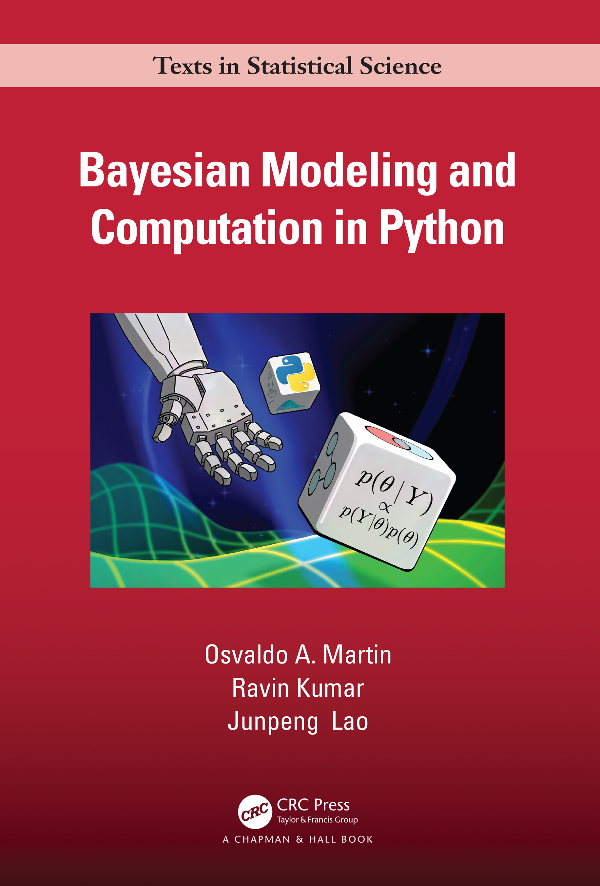

{on hold} Jointprob: a probabilistic modeling and Bayesian statistics study community

Jointprob is a study community for probabilistic modeling and Bayesian statistics, running since August 2022.
Even though the community was initiated by Scicloj – a community for data science in Clojure – this study community is not focused on any single technology or programming language. Rather, it is open to people of diverse technical backgrounds and will continually seek dialogue and mutual inspiration across languages and technologies.
As of November 2024, we are planning to renew the meetings after a break of a few months.
Goal
This is a long-term project aiming to create a space for Bayesian practitioners, as well as aspiring ones, to learn & explore together and support each other.
We wish to be inclusive to people of diverse backgrounds and thus create a common ground where we can broaden our perspectives and inspire each other.
Joining
It is never too late to join us – we will help you to catch up.
Please use the Joining Jointprob form to join the community, to be added to our calendar events, or to update your preferences and personal information.
Also, you are always invited to write to us.
Schedule
Our upcoming journey: Regression and Other Stories
- August 2024 (TBD): an intro session and a first look into the book by Gelman, Hill, and Vehtari
Standalone sessions
Our second reading journey: Bayesian Modeling and Computation
- 2023-01-07: Bayesian Modeling and Computation: meeting the book’s author Ravin Kumar and brainstorming our new reading journey – see the blog post.
- 2023-01-21: Discussing our reading plans
- 2023-02-8/11: a motivating intro – Bayesian Methods for Hackers chapter 1
- 2023-02-15/18: probability & statistics review – Think Stats 2e chapters 1-6
- 2023-02-22/25: starting the main journey – Bayesian Modeling and Computation chapter 1 (mostly focused on section 1.1)
- 2023-03-8/11: Bayesian Modeling and Computation chapter 1: exercises and section 1.4 (priors)
- 2023-03-22/25: Bayesian Modeling and Computation chapter 2
- 2023-04-05/08: Bayesian Modeling and Computation chapter 2, mostly section 2.5
- 2023-04-19/22: Bayesian Modeling and Computation chapter 3
- 2023-05-3/6: Bayesian Modeling and Computation chapter 3, starting from section 3.3
- 2023-05-17/20: Bayesian Modeling and Computation chapter 4
- 2023-05-31/06-03: Tensorflow Probability
- 2023-06-14/17: selected dopics from chapters 5,6,7 of Bayesian Modeling and Computation
- 2023-06-28/07-01: chapter 8 of Bayesian Modeling and Computation
- 2023-07-12/15: chapter 9 of Bayesian Modeling and Computation
Our first reading journey: Statistical Rethinking
- 2022-07-22, initial brainstorming - event
- 2022-08-06, prep meeting about R & Tidyverse - event (joint event with the ds4clj course)
- 2022-08-15 - beginning of regular meetings (see the Groups below).
- 2022-08-15/17/19/20, Session 1: Statistical Rethinking chapter 1, R4DS sections 1-4
- 2022-08-31, 2022-09-2/3, Session 2: Statistical Rethinking chapter 2
- 2022-09-14/16/17, Session 3: chapter 2 - review of main notions and a look into exercises
- 2022-09-28/09-30/10-01, Session 4: chapter 3
- 2022-10-12/14/15, Session 5: chapter 4
- 2022-10-26/28/29, Session 6: chapter 4 - continued
- 2022-11-9/11/12, Session 7: chapter 5
- 2022-11-23/25/26, Session 8: chapter 6, personal regression projects
- 2022-12-7/9/10, Session 9: more about DAGs (section 6.4), chapter 7
- 2022-12-24, Session 10: information theory & information criteria - reporting on personal reading
Past Agenda
In the past, we have been meeting biweekly (in groups) to discuss our joint reading and projects.
Our joint reading journeys have been around the first half of Statistical Rethinking by Richard McElreath, and then around Bayesian Modeling and Computation in Python by Osvaldo A. Martin, Ravin Kumar and Junpeng Lao.


Present Agenda
As of August 2024, we are planning to begin a new reading journey around Regression and Other Stories by Andrew Gelman, Jennifer Hill, and Aki Vehtari
Calendar events
Please refer to the Joining section to join our calendar events.
Chat
The community uses Zulip, an open-source chat platform. In some other groups we’ve been running, we’ve found it useful for chat, in-depth discussion threads, and knowledge management.
Our Zulip organization is jointprob.zulipchat.com.
You may wish to learn a little bit about the concepts of Zulip streams and topics. Note that all streams and topics (and even single messages) have URLs, that you can open at separate tabs in your browser.
It would be wonderful to present yourself at the personal intros stream, preferably as a new topic thread.
Video platform
For video meetings, we currently use Zoom. The link is shared in the calendar events.
Recordings
Some parts of the sessions are recorded and shared internally in the Zulip chat. Possibly, we will also share some recorded parts publicly.
Projects
Participants take on projects as individuals or in small groups.
Example projects:
- read an article and share it with the group
- reimplement an example we have learned using a different technology
- explore a dataset with the methods learned
Recommended background
Participants are assumed to have some relevant knowledge.
To appreciate the content we are studying, it is recommended to have the following:
- basic knowledge of probability and statistics (say, college-level intro courses)
- programming experience in any language (a few months)
- experience exploring data
- an open mind
If you are not sure whether this journey fits your background, please write to us. We can think together.
Principles
The following core principles are typical of Scicloj study groups.
No experts. We do not assume that anybody is an expert in the field. We come to learn together with a student mindset.
A clear path. We will be very thoughtful about the agenda and where we wish to go. We will continually rethink and adapt our pathway going there.
Confused together. It is just fine to be confused. We will be there together and seek clarity together.
Being active. We encourage members to learn independently and take on projects. In a sense, its purpose is (also) to support those individual journeys.
Mutual curiosity. We make serious efforts to be inclusive to participants of various backgrounds. The different perspectives of our friends are part of what we wish to learn.
Contact
Please reach out:
- scicloj@gmail.com
- Daniel Slutsky at the chat